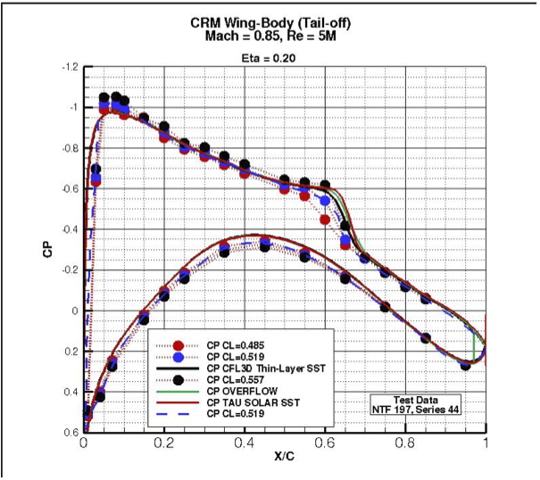

Geometries
Geometry files were revised on November 7, 2008. Please ensure that you are using the revised geometry.
Grids
Description of the unified baseline grid for the Common Research Model: AIAA Paper 2011-3508 Any additional grids used to create submitted results must be provided to the DPW Committee. History of Information Emails to Participants
Date Sent
Subject
19 September 2011
DPW-V Broad Announcement
01 February 2012
AIAA CFD Drag Prediction Workshps 2012: Grids are available
19 March 2012
AIAA CFD Drag Prediction Workshop 5 (DPW-5)
26 April 2012
DPW-5: Data submission, Data Forms
28 April 2012
DPW-5: Data Submission Deadline
14 May 2012
DPW-5: Data Submittal forms
20 May 2012
DPW-5: Some Information
23 May 2012
DPW-5: Data Submission
16 June 2012
DPW-5: Agenda, participants list
Data Submittal Forms


DPW-5 Summary of Participant Data (pdf file of summary presentation from DPW-5)
Workshop Agenda
Flyer
Participants List and Test Case Results
Photos from DPW-V
Links
1st
AIAA CFD Drag Prediction Workshop
2nd AIAA CFD Drag Prediction Workshop
3rd AIAA CFD Drag Prediction Workshop
4th AIAA CFD Drag Prediction Workshop
Contact
Email: aiaadpw@gmail.comFAQ
For any questions, please contact the organizers at
aiaadpw@gmail.com
NASA Official Responsible for Content
Joseph H. Morrison
Last Updated
10 June 2015